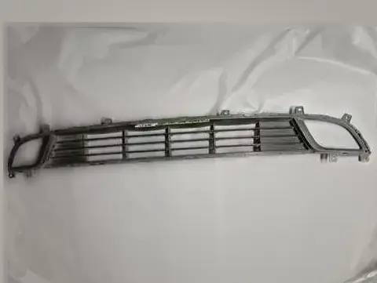

Piezas de carrocería para KIA Forte
16 piezas disponibles hoy para KIA Forte, cada una con su foto y su código: parrillas (6), defensas traseras (2), faros y lámparas delanteras (1), cubrepolvos (1). Dinos el año de tu carro y te confirmamos si le sirve.
- Garantía de 3 días
- Foto real de cada pieza
- Efectivo, Yappy o ACH
- Lunes a sábado, 8:00 a. m. a 5:00 p. m.
Parrillas para KIA Forte 6
 389Forte Sedan2016-18 · genérico
389Forte Sedan2016-18 · genérico 403Forte Sedan2016-18 · original
403Forte Sedan2016-18 · original 415Forte2019-21 · genérico nuevo
415Forte2019-21 · genérico nuevo 416Forte2016-18 · original nuevo
416Forte2016-18 · original nuevo 418Forte2024 · original
418Forte2024 · original
421Forte2016-18 · original DT204Forte
DT204Forte 005Forte
005Forte CP030Forte
CP030Forte HA002Forte
HA002Forte R035Forte
R035Forte R079Cerato / Forte
R079Cerato / Forte PCh013Forte
PCh013Forte TA020Forte
TA020Forte